【翻车新闻】1105 苏联笑话成真了
搬运自Reddit群组r/hanren，由u/s1refugee整理。
原地址：【翻车新闻】1105 苏联笑话成真了
1 纵做鬼 也幸福
2 公私合营再现
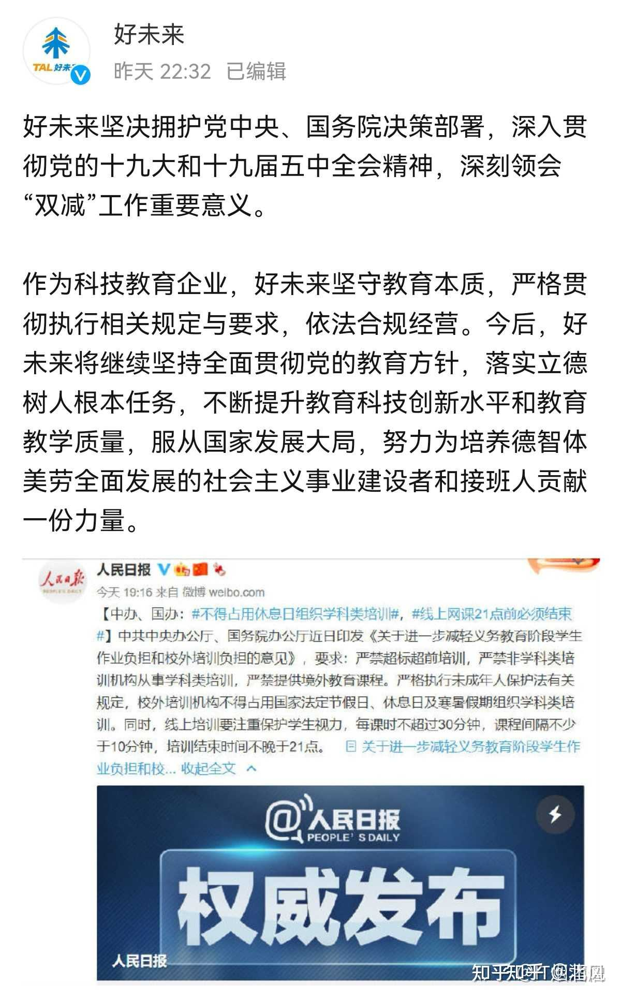
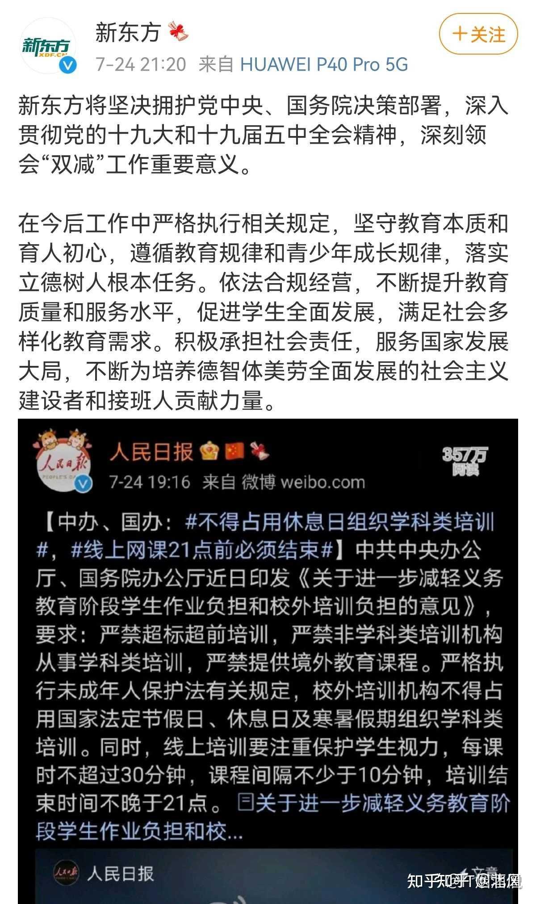
3 大逃杀开始
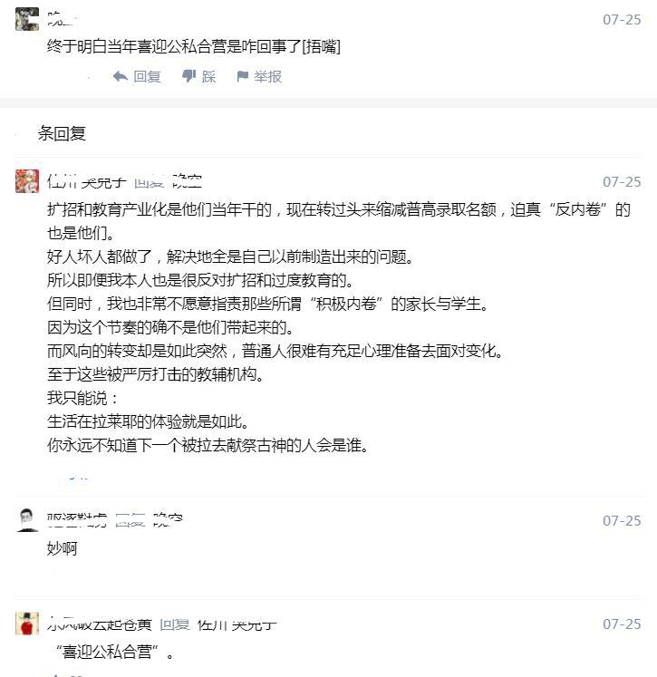
4 当场就换人了
5 这下被欺负了
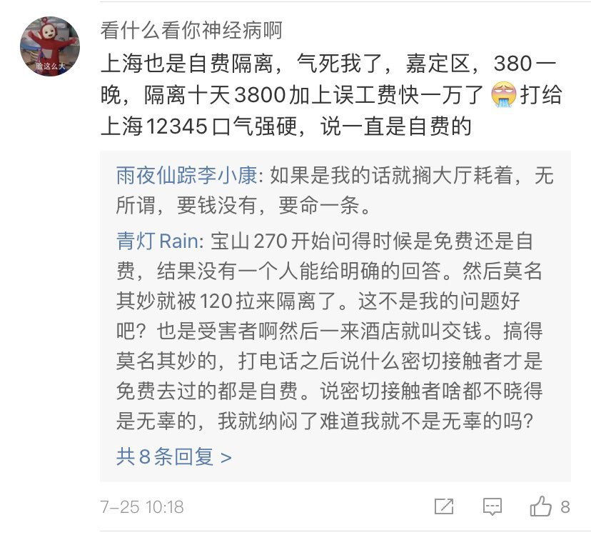
6 冲！加速！
7 又一个离岸爱国的
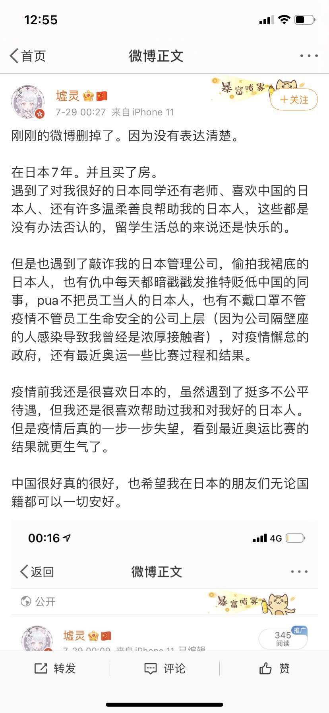
8 我双标无罪
9 大意失亲爹
10 塔罗牌都不放过
11 官老爷的事情，能一样么？
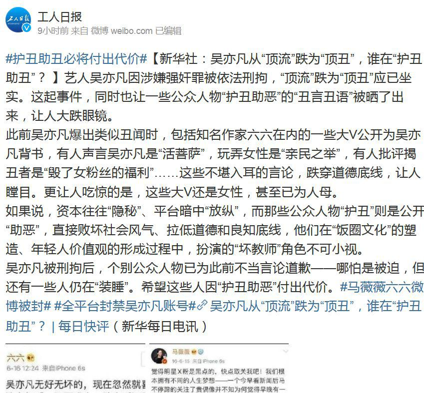
12 又一个离岸爱国的
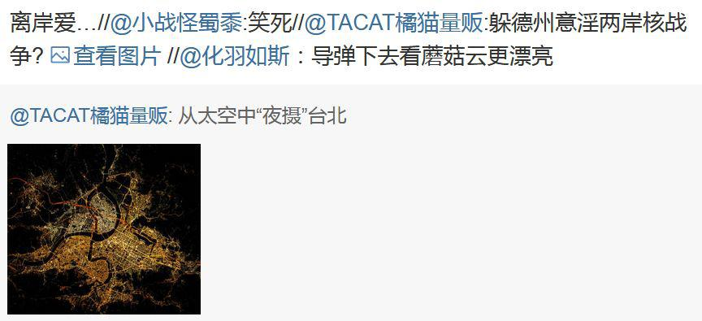
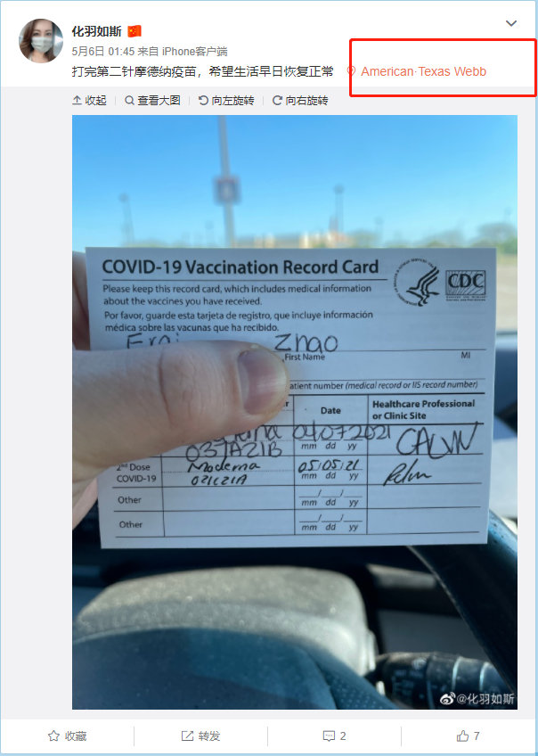
13 苏联笑话成真了
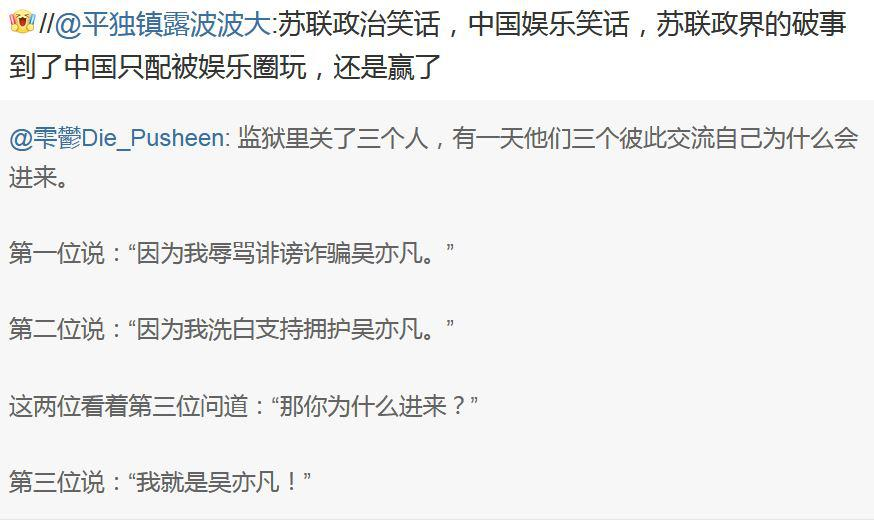
上一期：https://mohu.rocks/article/6098（备份）
下一期：https://mohu.rocks/article/6104
备份本期：https://web.archive.org/save/https://mohu.rocks/article/6103
原地址：【翻车新闻】1105 苏联笑话成真了
1 纵做鬼 也幸福
2 公私合营再现
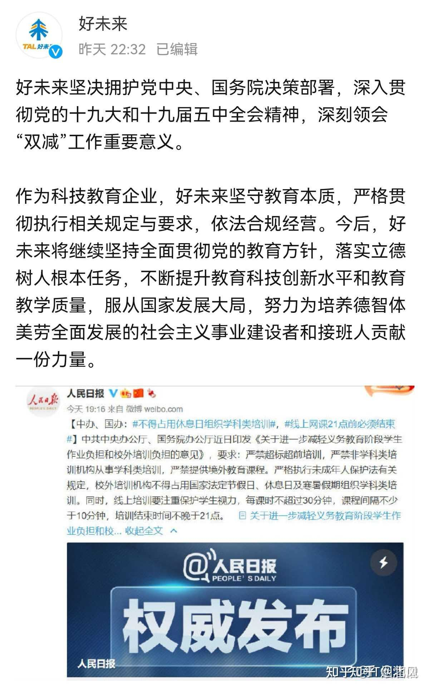
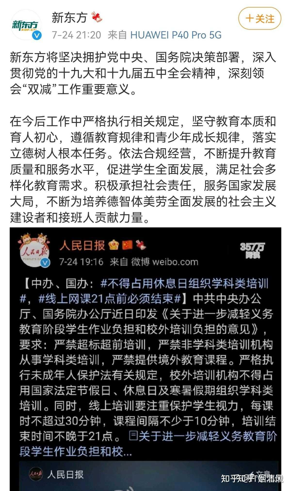
3 大逃杀开始
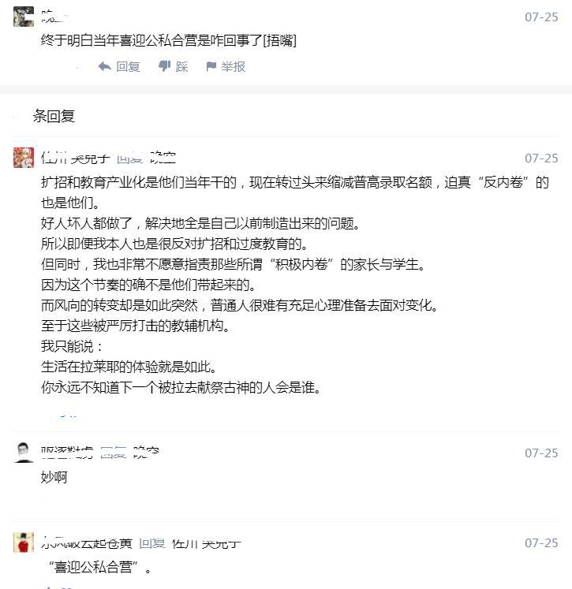
4 当场就换人了
5 这下被欺负了
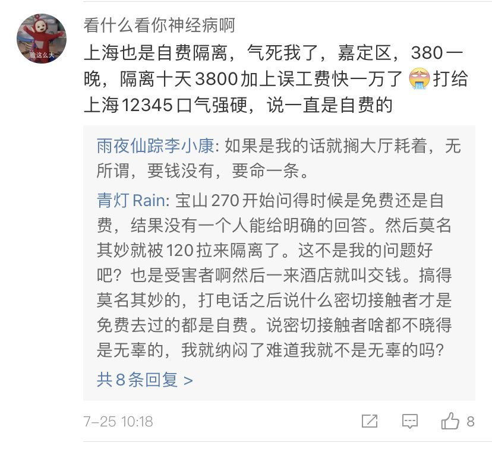
6 冲！加速！
7 又一个离岸爱国的
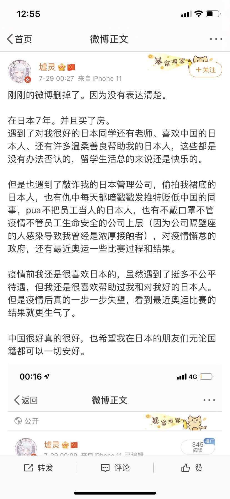
8 我双标无罪
9 大意失亲爹
10 塔罗牌都不放过
11 官老爷的事情，能一样么？
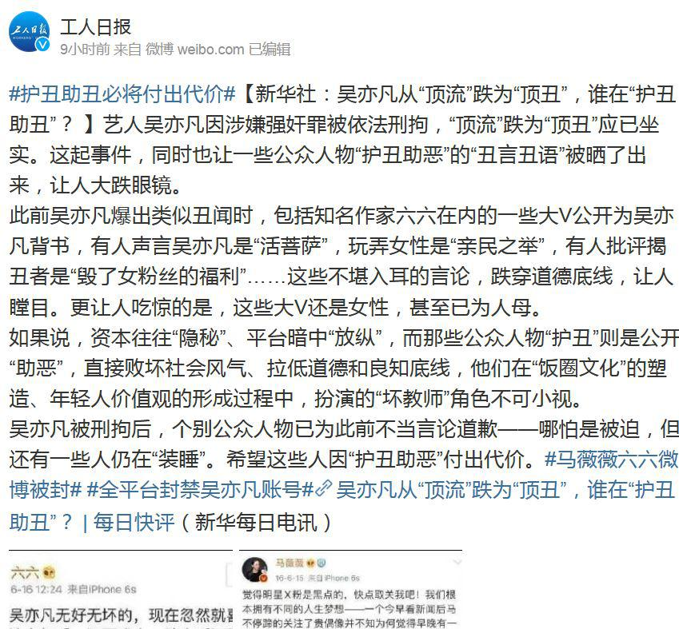
12 又一个离岸爱国的
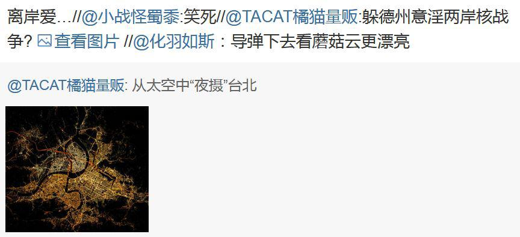
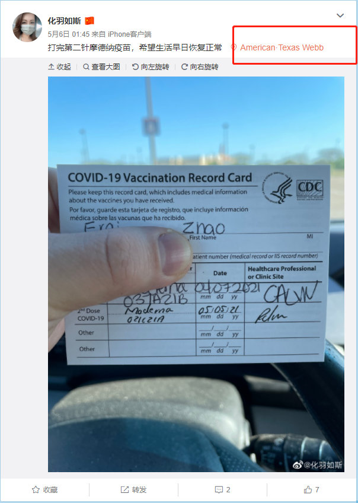
13 苏联笑话成真了
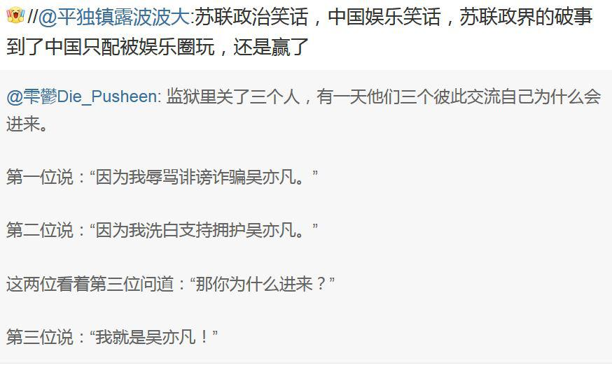
上一期：https://mohu.rocks/article/6098（备份）
下一期：https://mohu.rocks/article/6104
备份本期：https://web.archive.org/save/https://mohu.rocks/article/6103
2 个评论
我妈死了
习近平家里闹鼠患但穷得买不起老鼠药，他聪明地把屎抹在粮食上就不怕老鼠偷吃他的晚饭了。
习近平家里闹鼠患但穷得买不起老鼠药，他聪明地把屎抹在粮食上就不怕老鼠偷吃他的晚饭了。
共青团既然可以这样表扬吴亦凡，为何不用同样的方式表扬刘亦菲、李连杰、梁静茹、林俊杰？